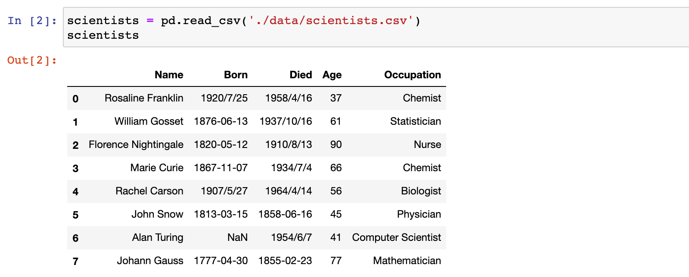
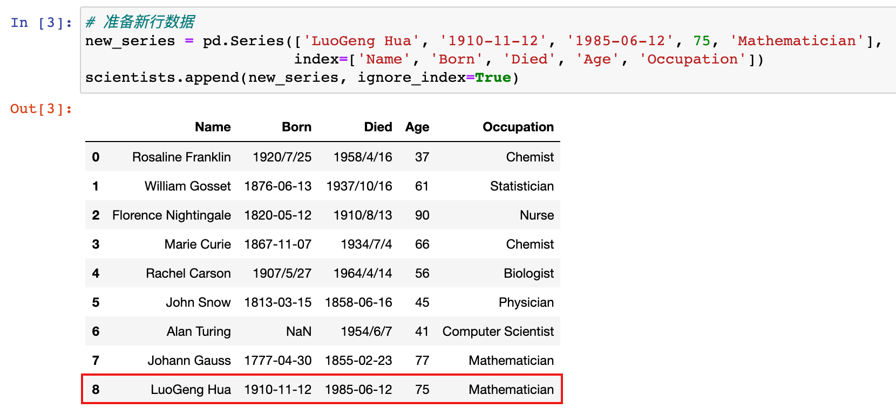
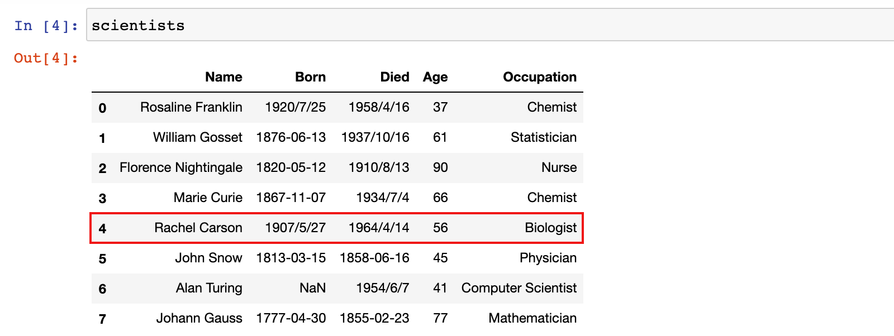
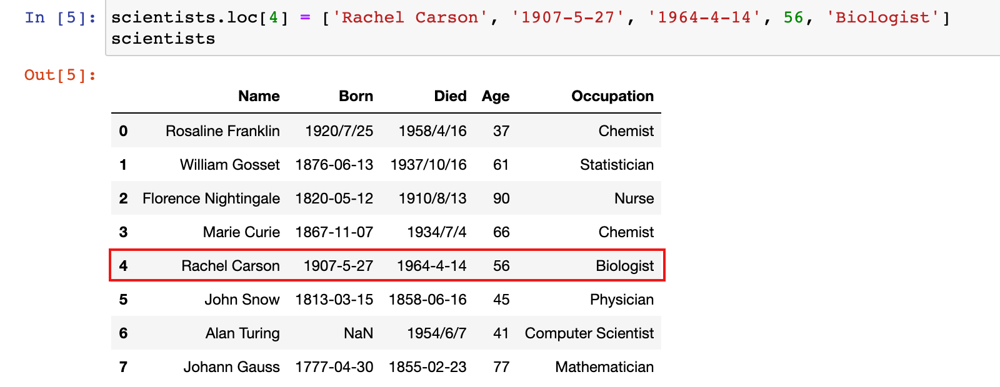
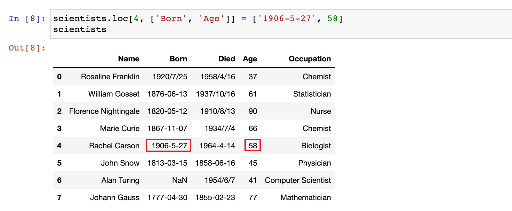
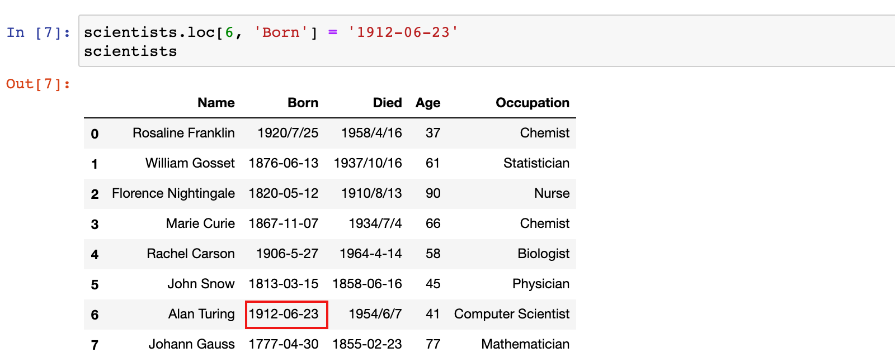
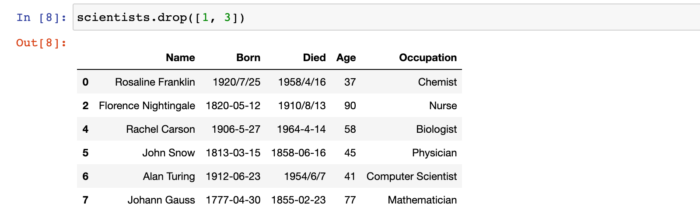
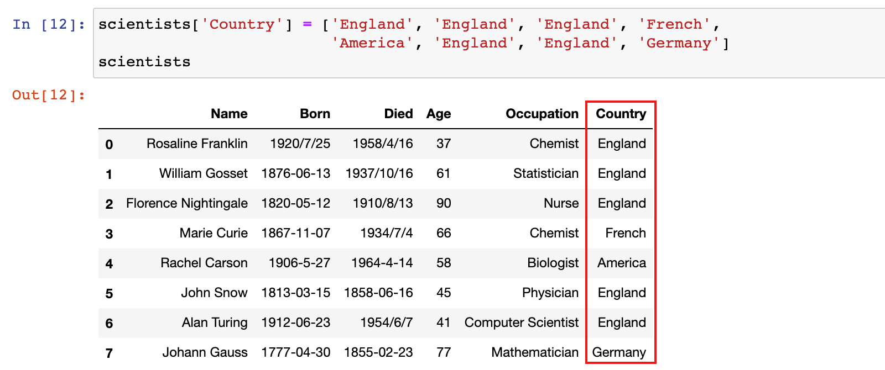
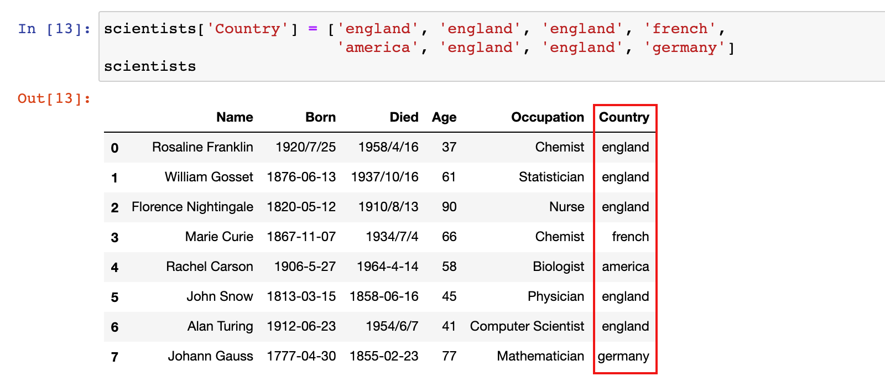
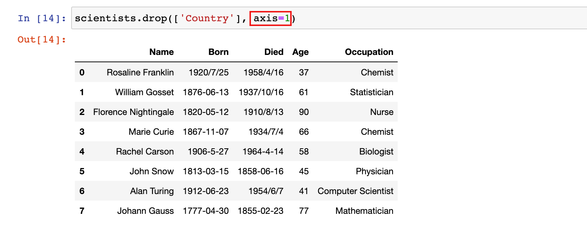

DataFrame增删改
学习目标
- 能够进行 DataFrame 的行操作(添加行/修改行/删除行)
- 能够进行 DataFrame 的列操作(添加列/修改列/删除列)
1. DataFrame 行操作
1.1 添加行
注意：添加行时，会返回新的 DataFrame。
基本格式：
| 方法 | 说明 |
|---|---|
df.append(other) |
向 DataFrame 末尾添加 other 新行数据，返回新的 DataFrame |
1）加载 scientists.csv 数据集
scientists = pd.read_csv('./data/scientists.csv')
scientists

2）示例：在 scientists 数据末尾添加一行新数据
# 准备新行数据
new_series = pd.Series(['LuoGeng Hua', '1910-11-12', '1985-06-12', 75, 'Mathematician'],
index=['Name', 'Born', 'Died', 'Age', 'Occupation'])
scientists.append(new_series, ignore_index=True)

1.2 修改行
注意：修改行时，是直接对原始 DataFrame 进行修改。
基本格式：
| 方式 | 说明 |
|---|---|
df.loc[['行标签', ...],['列标签', ...]] |
修改行标签对应行的对应列的数据 |
df.iloc[['行位置', ...],['列位置', ...]] |
修改行位置对应行的对应列的数据 |
1）示例：修改行标签为 4 的行的所有数据
修改之前：

修改之后：
scientists.loc[4] = ['Rachel Carson', '1907-5-27', '1964-4-14', 56, 'Biologist']
scientists

2）示例：修改行标签为 4 的行的 Born 和 Age 列的数据
scientists.loc[4, ['Born', 'Age']] = ['1906-5-27', 58]
scientists

3）示例：修改行标签为 6 的行的 Born 列的数据为 1912-06-23
scientists.loc[6, 'Born'] = '1912-06-23'
scientists

1.3 删除行
注意：删除行时，会返回新的 DataFrame。
基本格式：
| 方式 | 说明 |
|---|---|
df.drop(['行标签', ...]) |
删除行标签对应行的数据，返回新的 DataFrame |
1）示例：删除行标签为 1 和 3 的行
scientists.drop([1, 3])

2. DataFrame 列操作
2.1 新增列/修改列
注意：添加列/修改列时，是直接对原始 DataFrame 进行修改。
基本格式：
| 方式 | 说明 |
|---|---|
df['列标签']=新列 |
1）如果 DataFrame 中不存在对应的列，则在 DataFrame 最右侧增加新列 2）如果 DataFrame 中存在对应的列，则修改 DataFrame 中该列的数据 |
df.loc[:, 列标签]=新列 |
1）如果 DataFrame 中不存在对应的列，则在 DataFrame 最右侧增加新列 2）如果 DataFrame 中存在对应的列，则修改 DataFrame 中该列的数据 |
1）示例：给 scientists 数据增加一个 Country 列
scientists['Country'] = ['England', 'England', 'England', 'French',
'America', 'England', 'England', 'Germany']
或
scientists.loc[:, 'Country'] = ['England', 'England', 'England', 'French',
'America', 'England', 'England', 'Germany']
scientists

3）示例：修改 scientists 数据中 Country 列的数据
scientists['Country'] = ['england', 'england', 'england', 'french',
'america', 'england', 'england', 'germany']
或
scientists.loc[:, 'Country'] = ['england', 'england', 'england', 'french',
'america', 'england', 'england', 'germany']
scientists

2.2 删除列
注意：删除列时，会返回新的 DataFrame。
基本格式：
| 方式 | 说明 |
|---|---|
df.drop(['列标签', ...], axis=1) |
删除列标签对应的列数据，返回新的 DataFrame |
1）示例：删除 scientists 数据中 Country 列的数据
scientists.drop(['Country'], axis=1)

总结
- 能够进行 DataFrame 的行操作(添加行/修改行/删除行)
- 能够进行 DataFrame 的列操作(添加列/修改列/删除列)